|
|
|
In accordance with the specific
approach of this paper, the singular numerical values cannot contain
an infinite information amount (such is the case of the values
belonging to the set of the real numbers {R}), but a finite
information amount, contained in normal numerical values,
abstract realizable, values which are associated to a non
determination interval
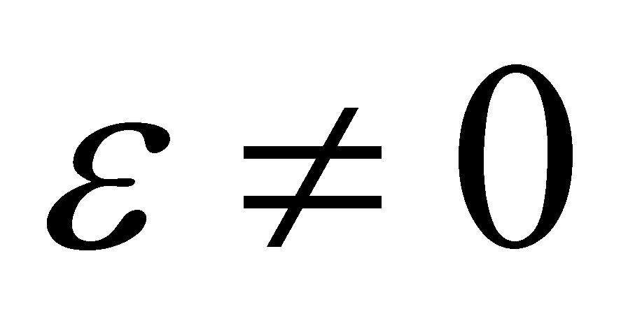.
Consequently, a finite interval
 placed on the axis of numbers, shall contain a finite number of
singular numerical values:
placed on the axis of numbers, shall contain a finite number of
singular numerical values:
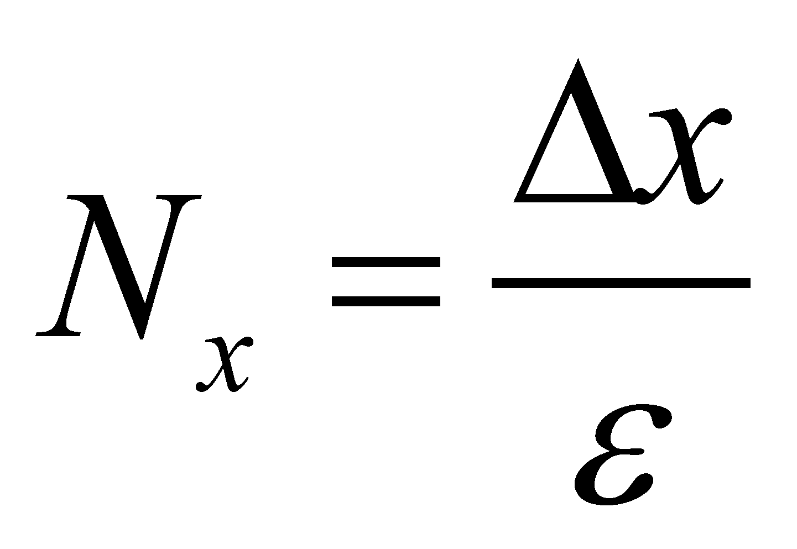 (X.3.8.1)
For making a clear picture on the value of , let us take a computing example by using an AIPS (a computer). Each AIPS has a maximum limit of ISS required for the storage of a numerical value, which is given by the word size in bits and by the number of words used for a singular numerical value. Regardless of how great this total number of bits will be for a singular value, it is finite, integer and equal with Nb. In such conditions, there will be a no determination interval between two singular adjacent values which are abstract realizable on AIPS:
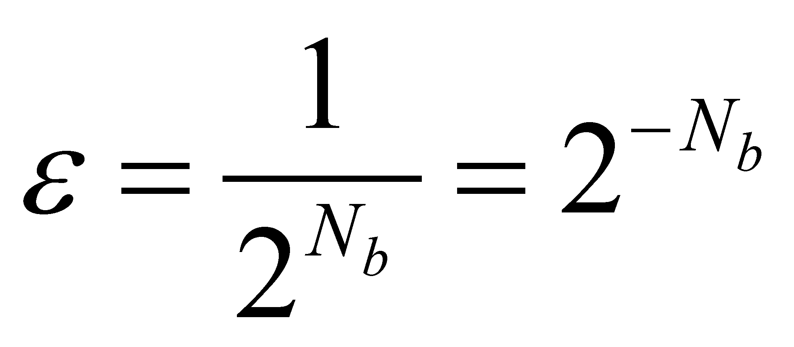 (X.3.8.2)
Any interval of values
 of
a variable x which is about to be used on this AIPS, shall be
made-up from no more than Nx (given by the
relation X.3.8.1) possible numerical values. In most of the cases,
this is a very great number (though finite) and due to reasons
related to the shortening of the computing time by decreasing the
iterations number, there will not be used all these values, but only:
of
a variable x which is about to be used on this AIPS, shall be
made-up from no more than Nx (given by the
relation X.3.8.1) possible numerical values. In most of the cases,
this is a very great number (though finite) and due to reasons
related to the shortening of the computing time by decreasing the
iterations number, there will not be used all these values, but only:
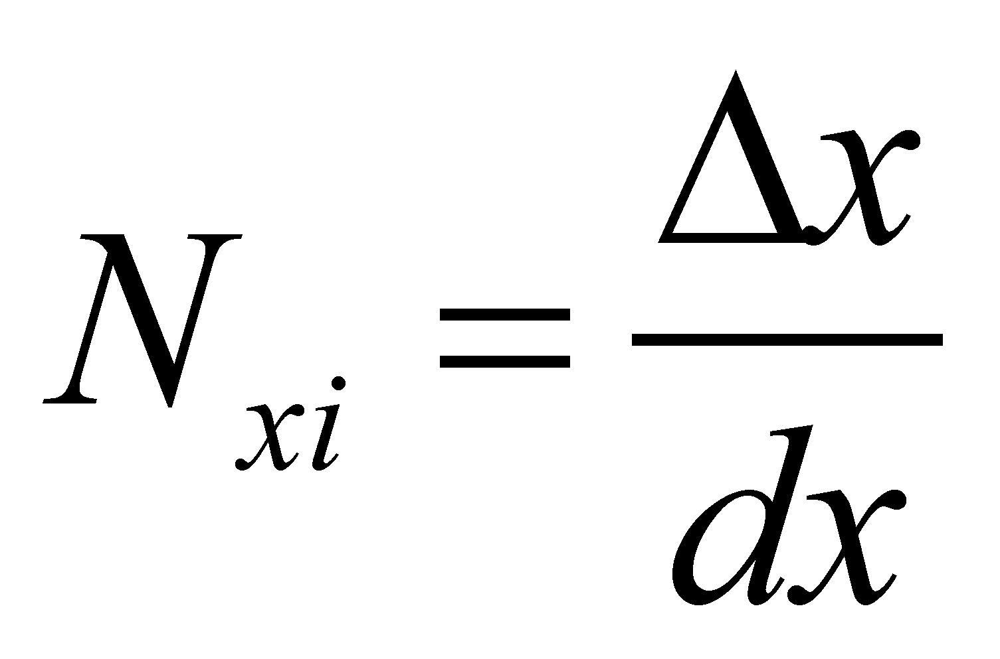 (X.3.8.3)
where dx is (for that calculus
process) the elementary interval. This is an elementary interval
because it is the iteration step of the variable x and there
will not be other numerical values. Therefore, there are two types of
elementary intervals of a variable in the abstract realizable world
and these are
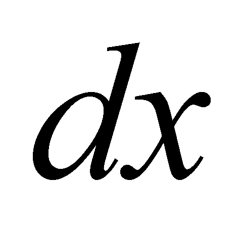
and
 .
The first is the elementary interval whose dimension is imposed by
the number of iterations which may approximate a continuous variation
of an uneven distribution by means of even distributions. The second
one is the non determination interval
.
The first is the elementary interval whose dimension is imposed by
the number of iterations which may approximate a continuous variation
of an uneven distribution by means of even distributions. The second
one is the non determination interval
 which is introduced in order to display a numerical value with a
finite number of digits (Nb binary digits).
For a certain type of AIPS, as well as for the human mind, there is
no other numerical value within this interval, except the internal
reference of the singular value, that is a RAV (see section
X.3.2.2.1). As a conclusion, according to the realizable mathematics
used within the objectual philosophy, when we are dealing with an
elementary domain of a variable x, instead of the notation
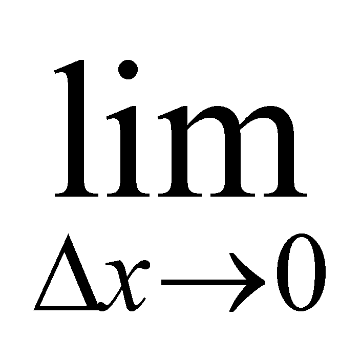,
we may use
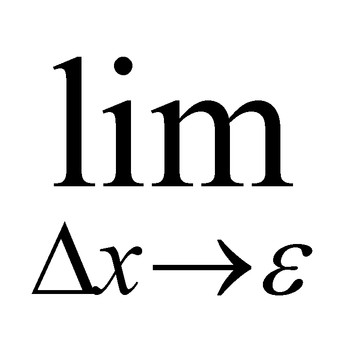because
which is introduced in order to display a numerical value with a
finite number of digits (Nb binary digits).
For a certain type of AIPS, as well as for the human mind, there is
no other numerical value within this interval, except the internal
reference of the singular value, that is a RAV (see section
X.3.2.2.1). As a conclusion, according to the realizable mathematics
used within the objectual philosophy, when we are dealing with an
elementary domain of a variable x, instead of the notation
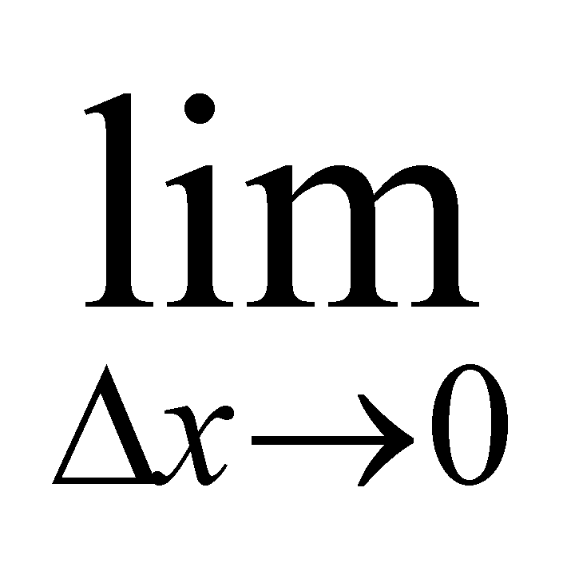,
we may use
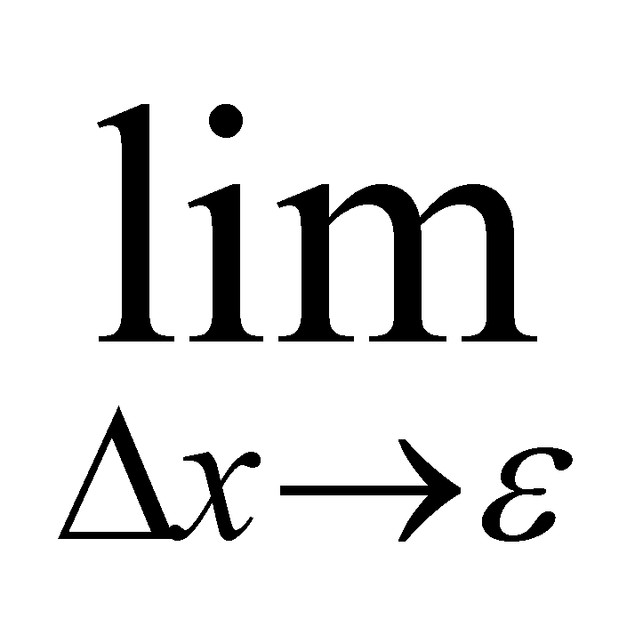because
 is the compulsory (minimum) “quantum” which separates two
numerical realizable values.
is the compulsory (minimum) “quantum” which separates two
numerical realizable values.
If we are dealing
with an area element
with the dimensions
,
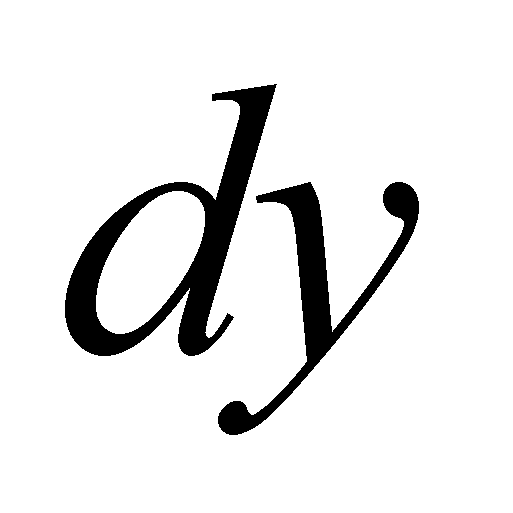,
and by considering that
 is the same for both dimensions, each interval shall contain Nx
and Ny singular values. We saw
that the normal numerical value is also referred to as domain point
(DP), and according to the one-dimensional case, it will be 1D DP.
Therefore, an one-dimensional interval dx contains Nx
1D DP, and Ny for dy. In such
conditions, the area element dS shall contain:
is the same for both dimensions, each interval shall contain Nx
and Ny singular values. We saw
that the normal numerical value is also referred to as domain point
(DP), and according to the one-dimensional case, it will be 1D DP.
Therefore, an one-dimensional interval dx contains Nx
1D DP, and Ny for dy. In such
conditions, the area element dS shall contain:
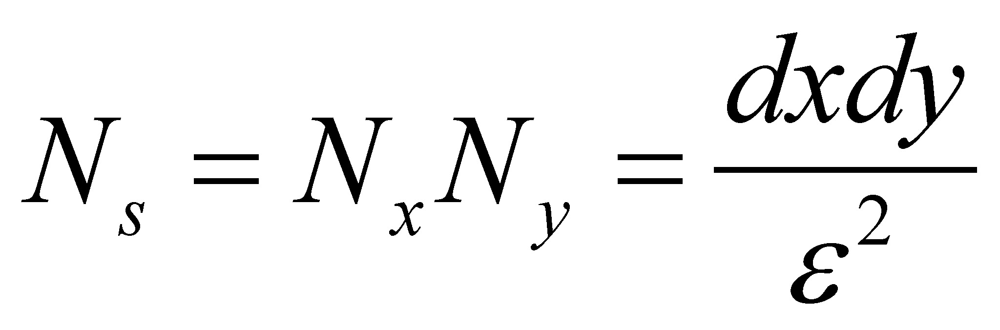 (X.3.8.4)
2D DP. Let us presume that an amount dM of the attribute M is evenly90 distributed on this area element. In this case, the density of the even surface distribution is:
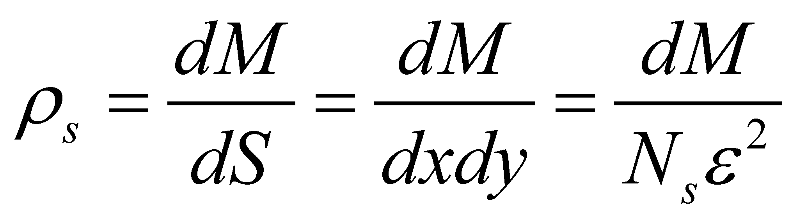 (X.3.8.5)
According to the relation X.3.8.5, we may see that in case of the realizable surface distributions which always contain an integer number of elements, each distribution element contains a number NS of 2D DP and each 2D DP is related (in case of the cumulative attributes) to the same elementary quantity 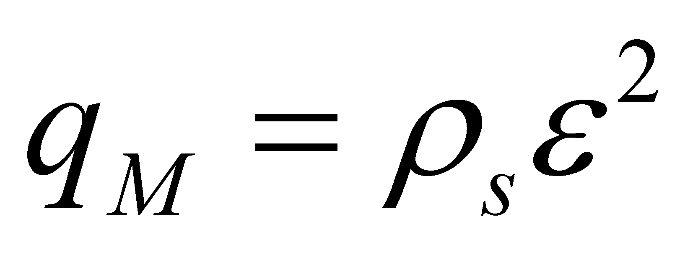of distributed attribute. Obviously, there is a similar approach for 3D spatial distributions, and in this case, a volume element dV shall contain:
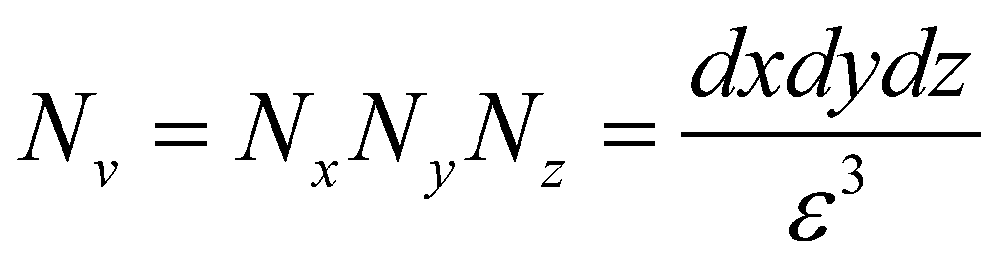 (X.3.8.6)
3D DP. If a quantity dM of attribute M is evenly distributed on this volume element, then, the distribution density shall be:
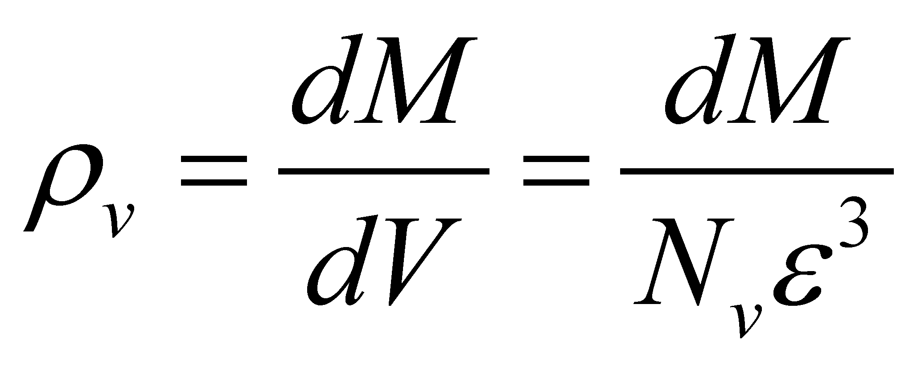 (X.3.8.7)
and each 3D DP from the structure of the volume element will be related to a “quantum” 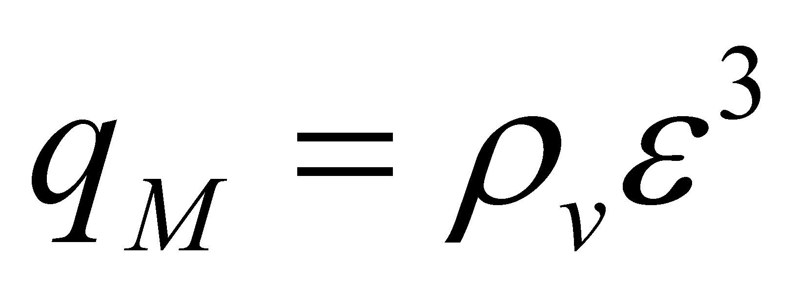of attribute M.
90 The expression is intentional pleonastic (redundant), only for underlining the fact that according to the objectual philosophy, the elementariness of a support domain is not necessarily related to its size, but rather to the compulsory condition which requires that an even distribution to be deployed on it.
Copyright © 2006-2011 Aurel Rusu. All rights reserved.